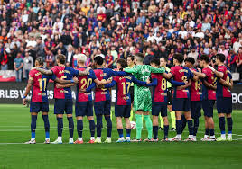

Futbol Club Barcelona (također poznat i pod nazivom Barcelona ili jednostavnije Barça) je profesionalni nogometni klub smješten u Barceloni (Katalonija). FC Barcelonu je 1899. godine osnovala skupina švicarskih, engleskih i katalonskih nogometaša koju je predvodio Joan Gamper, a klub je postao simbol katalonske kulture i katalonizma uz moto "Više od kluba". Službena himna Barcelone je Cant del Barça autora Jaumea Picasa i Josepa Marije Espinàsa.[2] To je drugi najbogatiji nogometni klub u svijetu s prosječnom zaradom od 398 milijuna Eura. Najveći nogometni rival Barcelone je Real Madrid, a njihove zajedničke utakmice poznate su pod nazivom El Clásico.
